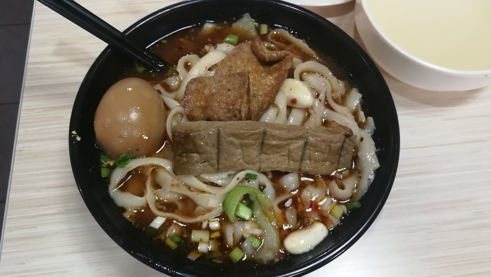
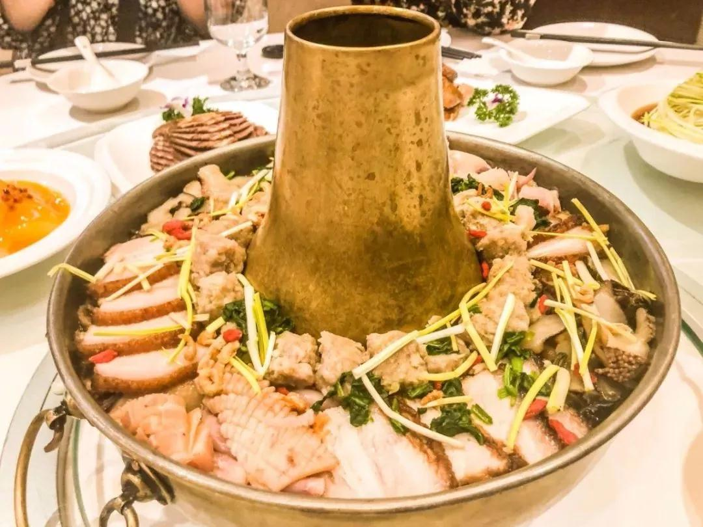
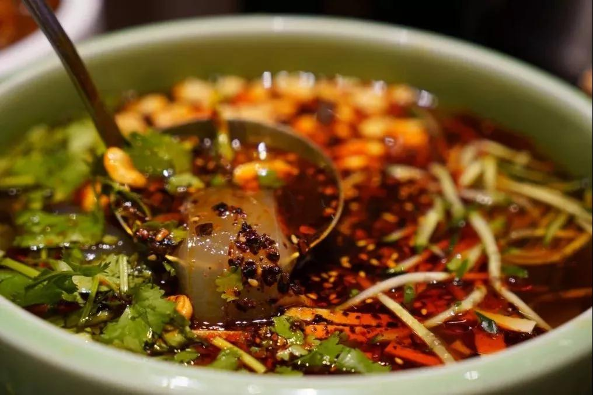

大同曾是北魏首都,辽金陪都,境内历史古迹众多,旅游资源十分丰富。大同的饮食文化同样源远流长。各种独特的大同美食,不仅令远在他乡的大同人思念不已,也让众多的外地游客慕名前来。
刀削面

面食,是大同人最喜爱的美食之一。在大同,吃面的地方真的有很多,随便在街上走一走,总会看到几家种类不同、特色不一的面馆。而真要说起大同的面食,最具代表性的莫过于刀削面了。走在大同的大街小巷,刀削面店铺比比皆是。大同刀削面是山西省著名的汉族小吃,入口外滑内筋,软而不粘,越嚼越香。山西大同的刀削面之所以会独树一帜,主要与它的做工有着极大的关系。大同刀削面制作严格,削出来的面细长、光滑、有嚼劲。浇以各色调料,让面香与调料香齐飞!大口吃,大口嚼,体味一份浓浓的北方风情!
大同什锦铜火锅

“什锦铜火锅”是古城大同一道民间传统名菜。“什锦火锅”顾名思义,是用多种食材制作而成的。 肉类有大同传统大烧肉、清蒸丸子、白煮柴鸡等;素菜有干豆角、干葫芦条、黄花、木耳、白菜、菠菜、油炸豆腐、油炸山药等; 另配有水发鱿鱼、海参、墨斗鱼、海菜等组成。金黄锃亮的铜火锅里,下面是味道鲜美的烧肉、丸子、鸡块、海参、鱿鱼,上面铺着 香菇、木耳、黄花菜、干豆角、葫芦条、粉丝、油炸豆腐、冻豆腐等菜品。不需要蘸任何小料,什锦火锅内鲜香的汤料就足以让人口齿留香。
浑源凉粉

凉粉,是夏季里人们最喜爱的美食之一。而在大同,人们爱吃凉粉,不分春夏秋冬。大同的凉粉,一年四季都有, 且风味独特!这里的凉粉,主要用盐汤、酱油、辣椒油、醋、香油、味精、葱花进行调味,配以黄瓜丝、香菜、豆腐干等,吃起来最是清凉可口。